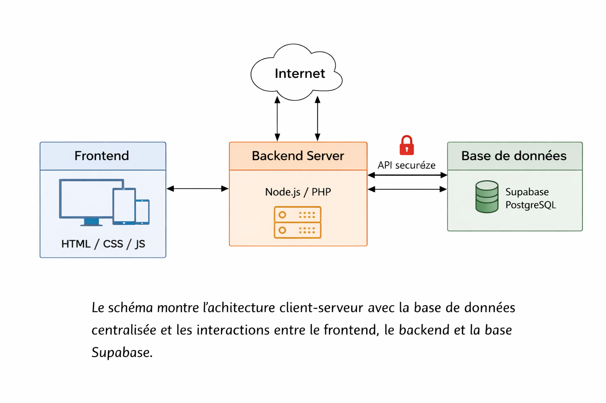

Fiche de situation professionnelle n°2
Épreuve : E6 | Organisation : M2L | Web/Système
Numéro de candidat : 02543699075
Date de convocation : 27/02/2026
1. Contexte professionnel
La M2L souhaite offrir aux administrateurs un outil web pour gérer les réservations de salles en temps réel et visualiser l’occupation des infrastructures depuis n’importe quel navigateur.
L’objectif est de moderniser l’accès aux informations et permettre une gestion plus réactive.
2. Description de la situation professionnelle
Développement d’un site web permettant :
- Visualisation des réservations en temps réel
- Ajout, modification et suppression des réservations
- Gestion des salles et des utilisateurs
- Authentification sécurisée pour les administrateurs
3. Objectifs de la mission
- Concevoir l’architecture client-serveur
- Créer une base de données centralisée sur Supabase PostgreSQL
- Développer une interface web responsive et ergonomique
- Implémenter l’authentification et sécuriser les accès
- Tester et valider toutes les fonctionnalités du site
4. Moyens matériels et logiciels
- Ordinateur avec navigateur et IDE (VS Code)
- HTML / CSS / JavaScript pour le frontend
- Node.js ou PHP pour le backend
- Supabase PostgreSQL pour la base de données
- Git pour versionnement
5. Réalisations techniques
- Création de la base de données Supabase
- Développement du frontend HTML/CSS/JS
- Développement du backend Node.js/PHP pour gérer les requêtes
- Implémentation d’un système d’authentification sécurisé
- Tests fonctionnels et validation des scénarios utilisateurs
6. Compétences mobilisées
- Développement Web et architecture client-serveur
- Gestion de base de données centralisée
- Sécurisation des accès et protection des données
- Création d’interfaces utilisateurs ergonomiques
7. Résultats obtenus
Le site web permet aux administrateurs de gérer efficacement les réservations, visualiser l’occupation en temps réel et sécuriser les accès aux données sensibles.
La gestion est désormais centralisée et accessible depuis n’importe quel navigateur.
Schéma d’infrastructure

Le schéma illustre l’architecture client-serveur : le frontend communique avec le backend qui interagit avec la base Supabase PostgreSQL.